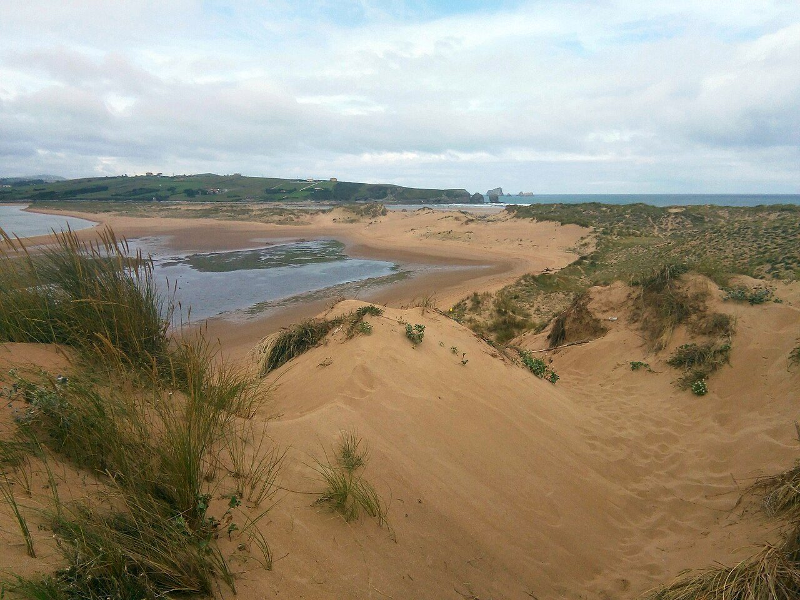

Parque Natural de las Dunas de Liencres
Criterios: PN 6.1, PN 5.2
🤔 Pienso5 min
Qué hago aquí: Piensa un momento y contesta con lo que ya sabes. No pasa nada si no lo sabes: es para empezar.
Si una duna es solo arena, ¿por qué no se la lleva el viento? Escribe una hipótesis.
📖 Leo y aprendo15 min
Qué hago aquí: Lee despacio, mira los dibujos y los ejemplos, y quédate con la idea clave del final.

Foto: Maite Von Thode · CC BY-SA 4.0 · 11.Dunas de Liencres-Cantabria.jpg
Las dunas se forman así: el viento del mar empuja la arena de la playa hacia el interior; cuando choca con un obstáculo (una piedra, una planta), la arena se acumula. Plantas como el barrón crecen enterradas y sujetan la arena con sus raíces, y la duna va creciendo. Detrás, en la parte más estable, crece un pinar que se plantó para frenar la arena que invadía los prados.
✏️ Hago25 min
Qué hago aquí: Haz las actividades en orden. Empieza siempre por las básicas.
Explica en cuatro pasos cómo se forma una duna. ¿Qué papel tienen el viento, los obstáculos y las plantas?
Responde a la pregunta de Pienso con lo que has aprendido: si una duna es solo arena, ¿por qué no se la lleva el viento?
El pinar de Liencres no es natural: se plantó. Explica por qué se plantó y si crees que hoy debería conservarse o sustituirse por vegetación autóctona. Justifícalo.
Explica la cadena de consecuencias de pisar una duna, desde la planta arrancada hasta la pérdida de la playa.
El parque recibe muchas visitas en verano. Propón un plan con tres medidas (accesos, aparcamiento, información) y explica cómo comprobarías si funciona al cabo de un año.
Compara las dunas de Liencres con Costa Quebrada: ¿qué valores tiene cada una? ¿Por qué tendría sentido protegerlas juntas?
Dibuja el perfil de la playa a la duna y al pinar, señalando dónde está la arena suelta, el barrón y la zona más estable.
✏️ Puedes responder escribiendo, con un dibujo o un esquema, o contándolo en voz alta.
🚀 Amplío (si quieres saber más)
Qué hago aquí: ¿Has terminado? Lee la curiosidad o elige el reto. Es voluntario.
Busca dos fotos aéreas de Liencres de años distintos (por ejemplo, en el visor de ortofotos históricas del Gobierno de Cantabria o del IGN). Compáralas: ¿ha cambiado la forma de las dunas, la vegetación, los accesos o los aparcamientos? Explica qué causas pueden explicar los cambios.
✅ Compruebo5 min
Qué hago aquí: Contesta sin mirar la ficha y marca cómo lo llevas.